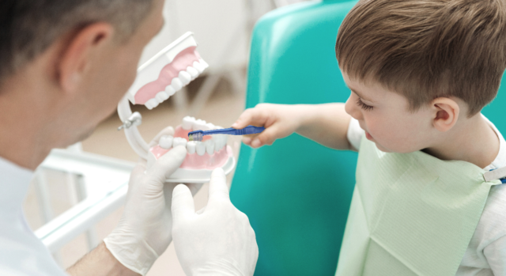

En Clínica Dentalvel somos conscientes de la importancia de cuidar la salud bucal de los más pequeños de la casa, y por ello somos expertos en odontopediatria en Valencia. La Odontopediatria es aquella parte la odontología que se encarga del cuidado, mantenimiento y prevención de la salud dental del niño desde su infancia hasta su adolescencia.
Cualquier alteración en dientes temporales que no sea tratada, puede influir posteriormente en las piezas permanentes.

Los tratamientos preventivos no son molestos. Sin embargo, existen otros en los que podría ser necesario el uso de anestesia, y para ello contamos con especialistas en odontopediatria que conocen las técnicas adecuadas para que estos sean indoloros (infórmate en nuestra Clínica sobre el Óxido Nitroso)